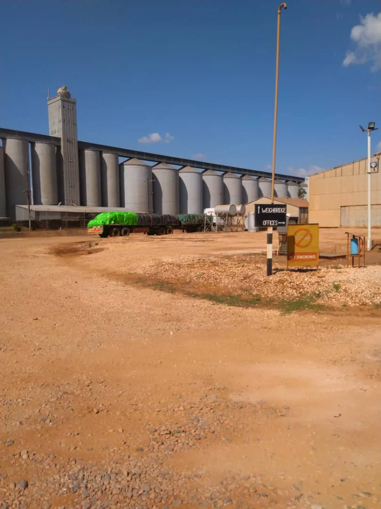
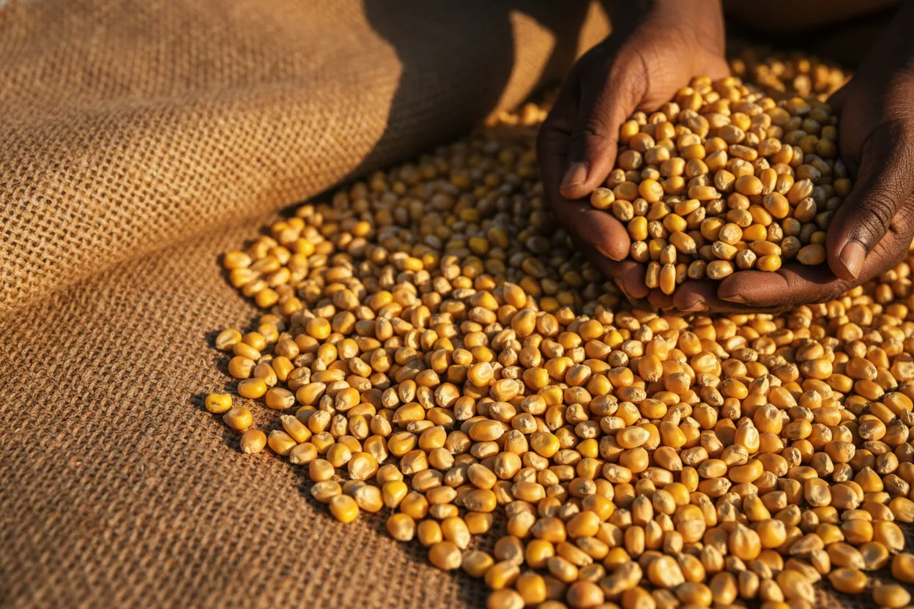

AYCAS sources grain and pulse volumes from two origins — commercial growers inside Zimbabwe (particularly Non-GMO white maize) and regional surplus producers in South Africa, Zambia and Malawi when domestic supply falls short. Maize across GMO and Non-GMO lanes, sugar beans, soya beans and peanuts — delivered into blue-chip Zimbabwean industrial buyers.
Zimbabwean millers and feed mills operate in a market where local production swings with rainfall and acreage. AYCAS contracts directly with Zimbabwean commercial growers where the crop allows — particularly on Non-GMO white maize — and uses regional imports to cover the deficit. Both lanes run under the same contract, inspection and weighbridge discipline.
Domestic contracts run directly with Zimbabwean commercial growers or their aggregators, with SGS / Bureau Veritas / Intertek inspection at loading and retained samples held for 60 days. Regional imports run on GAFTA terms under the same inspection regime. Phytosanitary certification applies to import flows — obtained at origin through the relevant national authority and verified at the Zimbabwean border by the Department of Plant Quarantine Services. Tonnage is confirmed at loading weighbridge and re-verified at client weighbridge — invoices are raised against the delivered tonnage, not the paper declaration.
Typical lots range from a single 30 MT truck up to programme tonnages spanning a crop season. Domestic grain is priced ex-farm or delivered-to-mill; imports contract CFR Zimbabwe border, delivered-to-mill, or ex-warehouse Harare / Bulawayo depending on counterparty preference.

Maize is the workhorse of the AYCAS grain book. Buyers split broadly into two lanes: white maize for human consumption (roller-meal and super-refined mealie-meal) and yellow maize for the stockfeed industry. Non-GMO white maize is sourced directly from Zimbabwean commercial growers — our first-call origin where the crop allows. Regional supply fills the gap: Non-GMO from Zambia and Malawi; GMO from South Africa under SAFEX-referenced pricing.
Zimbabwe's importation rules distinguish clearly between GMO and Non-GMO maize for human consumption — certification at origin and cargo segregation through the supply chain are non-negotiable. AYCAS runs separate documentation trails and segregated transport for each class, whether the cargo originates locally or across the border.

Sugar beans are a Zimbabwean staple and consistent import line — primarily red speckled (sugar bean) varieties imported from Zambia and Malawi into Zimbabwean pulse packers, the retail trade and institutional catering.
We contract cleaned, graded beans to pulse-trade specifications with weevil-treatment certification at origin and phytosanitary clearance at the Zimbabwean border.
Zimbabwe's stockfeed industry and expanding poultry sector drive a consistent soya demand that local crushers alone cannot meet. AYCAS imports both whole soya bean (for crushing into meal and oil domestically) and soya bean meal (direct feed ingredient) from Zambian and South African producers.
Protein and oil content are specified per contract; meal is typically traded against a minimum crude protein spec with moisture and fibre tolerances.
Peanuts (groundnuts) import into Zimbabwe for the confectionery, peanut-butter and snack industries as well as the retail trade. Food-grade lots are contracted to aflatoxin limits in line with international (EU / Codex) standards, moisture and count per ounce.
Every grain and pulse line runs on the same disciplined contract, inspection and logistics framework. Counterparties see consistent documentation across all imports.
Tell us the commodity, grade, volume and delivery window. We'll come back within five working days with an executable quotation or an honest decline.
Request a trade brief